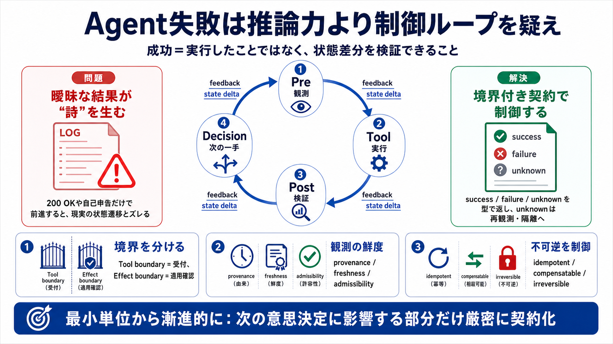

Ago Verify - Home
Verify accounts, receive SMS, and protect your privacy. It allows you to verify accounts on services like WhatsApp, Tele…

Verify accounts, receive SMS, and protect your privacy. It allows you to verify accounts on services like WhatsApp, Tele…
Full conjugation of "to verify" ; Present · verify · verify · verifies ; Present continuous · am verifying · are verifyi…
I verified my student status a few months ago and I am told to reverify it Why is it so?
Completed financial services verification 1 week ago and shows completed. Any ideas how to fix it? may not be verified o…
The verb verify used is to prove the truth accuracy or reality of something.